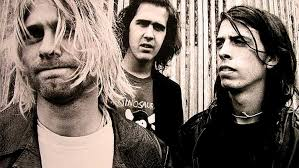

David Eric Grohl (Warren, Ohio; 14 de enero de 1969) es un músico multiinstrumentista estadounidense de rock. Saltó a la fama a comienzos
de los años 1990 como baterista de la icónica banda de grunge Nirvana,
junto a Krist Novoselic y su líder y compositor, Kurt Cobain. En 1994,
tras la muerte de Cobain y el fin de Nirvana, formó la que es su actual agrupación,Foo Fighters, siendo él en un principio el único miembro
y más tarde el vocalista, guitarrista y compositor.
Grohl empezó su carrera musical en los años 80 como baterista para varias bandas de Washington, DC, de las cuales la más destacada fue Scream.
Más tarde se instaló como baterista de Nirvana. En 2004 editó un disco bajo el nombre de Probot, en el cual colaboraban sus cantantes de heavy
metal favoritos. También ha destacado siendo uno de los miembros principales de Queens of the Stone Age, Garbage, Tenacious D, Killing Joke y
Juliette and the Licks.
La revista Rolling Stone lo situó en el puesto n°27 en su lista "100 greatest drummers of all time".
Actualmente reside en Encino, California en donde convive con Jordyn Blum, su esposa y sus hijas.
Cuando Grohl era un adolescente, su familia se mudó de Ohio a Alexandria, Virginia, una zona de Washington DC. Tres años más tarde,
sus padres se divorciaron y Grohl creció con su madre. A la edad de 12 años, Grohl empezó a tocar la guitarra. Intentó tomar lecciones,
pero pronto empieza a tocar en compañía de amigos. Un año más tarde, una visita de verano a la casa de su prima hizo crecer el interés
de Grohl por el punk rock, debido que su prima Tracy le llevó a varios conciertos en ese verano.
Durante los siguientes años, Grohl tocó en varias bandas locales, incluyendo Freak Baby en donde tocaba la guitarra. Cuando esta se
separó, entró en una banda hardcore punk, llamada Mission Impossible y una de hardcore/post-punk, llamada Dain Bramage. Luego, entró
como batería a una banda de hardcore, llamada Scream. En los años en que se desarrolló como baterista, Grohl citó a John Bonham de
Led Zeppelin y a Roger Taylor de Queen como sus más grandes influencias, llegándose a tatuar el logo de tres círculos (que aparece en
Led Zeppelin IV) de Bonham en su muñeca. El apellido Grohl es de origen eslovaco. El apellido originario era Grohol.
Vida privada
Grohl estuvo casado con la fotógrafa Jennifer Youngblood desde 1994 a 1997. Dave Grohl se casó con Jordyn Blum en el 2003, con quién
tiene tres hijas: Violet Maye Grohl, nacida el 15 de abril de 2006, Harper Willow Grohl, nacida el 17 de abril de 2009 y Ophelia
Saint Grohl, nacida el 1 de agosto de 2014.
En 2012, se estimó que Grohl era el tercer baterista más rico del mundo, detrás de Ringo Starr y Phil Collins, con una fortuna
aproximada de 260 millones de dólares. En parte, porque es baterista y compositor. Grohl es considerado por Ken Micallef,
coautor de Classic Rock Drummers, como uno de los músicos de rock más influyentes de los últimos 20 años.
Grohl finalizó sus estudios al comienzo del undécimo grado. Aún no sabe cómo leer una partitura y escribe su música de oído.
Scream (1986-1990)
A los 17 años, Grohl audicionó para la banda de Washington, D.C. Scream, para cubrir la vacante producida por la dimisión del
baterista Kent Stax. Con el fin de ser admitido para la audición, Grohl había mentido sobre su edad, diciendo que tenía 20 años.
Para su sorpresa, la banda le pidió que se uniera; después de vacilar durante un breve período, aceptó la oferta. Grohl abandonó
la escuela secundaria en su tercer año, él dijo: "Yo tenía 17 años y estaba muy ansioso de ver el mundo, así que lo hice". Grabó
con ellos álbumes en vivo (su show del 4 de mayo de 1990 en Alzey, Alemania fue lanzado por Tobby Holzinger en su Your Choice Live
Series Vol.10) y dos álbumes de estudio, No More Censorship y Fumble, en el que Grohl escribió y cantó en la canción "Gods Look Down".
Mientras tocó en Scream, Grohl se convirtió en un fan de Melvins y, finalmente, se hizo amigo de la banda. Durante una parada de la
gira de 1990, sobre la costa oeste, Buzz Osborne de Melvins llevó a dos de sus amigos, Kurt Cobain y Krist Novoselic, a ver a la banda.
Nirvana
En 1990, después de la gira, Scream se disolvió y Grohl fue invitado a formar parte de Nirvana. Grabó con el grupo Nevermind, In Utero y MTV
Unplugged in New York. Dave grabó con Nirvana su disco más famoso (Nevermind), y desarrolló una gran amistad con sus compañeros. El estilo
de tocar batería encajaba justo al sonido de la banda, razón por la que es considerado "el baterista definitivo de Nirvana". En 1994 tras
la muerte de Kurt Cobain y la disolución de la banda, Grohl, junto a su amigo Greg Dulli, grabaron el que sería el álbum debut de los
Foo Fighters en tan solo una semana.1

Dave junto a nirvana.
Late!
Durante el tiempo en el que fue miembro de Nirvana, Dave Grohl escribió varias canciones por su cuenta que no le parecieron del todo acorde
al sonido de esa banda. Por esta razón no introdujo la totalidad de ellas a sus compañeros, y decidió grabar un demo por su cuenta bajo el
seudónimo Late!, nombrando el álbum como Pocketwatch. La edición de este demo se hizo en apenas un ciento de casetes, que Grohl repartió únicamente
entre sus amistades y sin pretensión alguna de editarlo comercialmente. De aquí se desprende el tema Color Pictures of a Marigold que luego fue incluido
una reedición junto a Kurt Cobain en el sencillo Heart-Shaped Box.
El 11 de marzo de 1997 apareció el primer disco editado: Touch (es el segundo y último grabado en solitario), que es la banda sonora de la película del mismo nombre.
Foo Fighters
Grohl grabó el disco titulado "Foo Fighters" en solo una semana, y todos los temas fueron compuestos por él y grabados por él. Luego él necesitaba
formar una banda, para hacer una gira del álbum. Para ello acudió a: Pat Smear (guitarra), con quien había tocado en Nirvana, Nate Mendel (bajo),
y William Goldsmith (batería).
Grohl grabó "The Colour and the Shape", "There's Nothing Left to Lose", y "One by One", discos que prosiguieron a "Foo Fighters". Durante la grabación
de estos discos, la banda sufrió modificaciones en la formación, se fueron Pat Smear y William Goldsmith, que fueron reemplazados por Chris Shifflet
en guitarra y Taylor Hawkins en batería.
En los dos años y medio que le separan de One By One, los Foo Fighters no han perdido el tiempo. Grohl encabezó Probot, un proyecto de heavy metal
junto a figuras como Lemmy Kilmister (Motörhead) y King Diamond (Mercyful Fate, King Diamond) , además de tocar la batería en álbumes de Nine Inch
Nails, Garbage, Queens of the Stone Age y del grupo británico The Prodigy.
El futuro de Foo Fighters parecía impredecible. En presentaciones para la prensa de In Your Honor, Grohl dijo que ese podría ser el último escalón
en la carrera de la banda. Aunque en otras declaraciones afirmó que Foo Fighters podría seguir por años.
Habría ideas para lanzar un box-set con b-sides y covers grabados a lo largo de los diez años que la banda lleva de carrera, así como el deseo de
RCA/BMG de lanzar un Greatest Hits.
En septiembre de 2007 salió a la venta el sexto álbum: Echoes, Silence, Patience and Grace, con un estilo más melódico como de costumbre y rompedor
a la vez. Repiten con Gil Norton, productor del The Colour and the Shape.
En el 2009 se anunció que Dave Grohl, John Paul Jones de Led Zeppelin y Josh Homme de Queens of the Stone Age harían un super grupo. En agosto
se anunció que el nombre de la banda es Them Crooked Vultures.
En septiembre de 2009, Dave Grohl participó en la grabación de Slash, el primer álbum en solitario de su amigo Slash, el nombre de la
canción es Watch This/Watch This Dave
Wasting Light es el nuevo álbum de los Foo Fighters. Fue grabado de una forma casera en el garaje de Dave y fue lanzado oficialmente a la venta
el 10 de abril de 2011. "Rope" es el primer corte difusión del disco. También lanzan un video de "White Limo" en el cual se destaca la figura
de Lemmy (Motörhead) conduciendo la limusina.
El octavo álbum es Sonic Highways, el cual solo tiene 8 canciones de larga duración.
Después de un parón, en el cual sus integrantes se han dedicado a diversos proyectos en solitario, en 2011 Foo Fighters sale de gira para
presentar este último trabajo. Primero hacen un "garage tour" así titulado por ellos, en el cual únicamente tocan en garajes y para un
grupo reducido de gente. La presentación oficial del disco será el 2 y 3 de julio en el Milton Keynes, Inglaterra. Luego seguirán girando
por el resto de Europa, Estados Unidos, y para los últimos meses esperan hacer por primera vez una gira por Sudamérica.
El 2 de octubre de 2012 Grohl anunció a través de la cuenta oficial de la banda en Facebook y posteriormente en su página web oficial que
la banda tomaría un descanso indefinido, sin embargo en enero de 2013 declaró que estaba escribiendo nuevo material para un nuevo álbum.
El 10 de noviembre de 2014 se publicó Sonic Highways.
Su mas reciente album es Concrete and Gold, que contiene 3 sencillos.
Foo Fighters es considerada una de las mejores bandas de Rock Alternativo del siglo 21.
Dave en un show en vivo.
Them Crooked Vultures
Dave Grohl en la batería junto con el exbajista de Led Zeppelin, John Paul Jones y el vocalista y guitarrista de Queens Of The Stone Age,
Josh Homme (para presentaciones cuentan con el guitarrista rítmico de Queens Of The Stone Age, Alain Johannes), inician un grupo de
stoner rock en 2009. Por el momento solo han producido un material lanzado el 16 de noviembre de 2009 y continúan trabajando con su
próximo material. De este material nuevo solamente se ha tocado una canción en vivo, "Highway One".